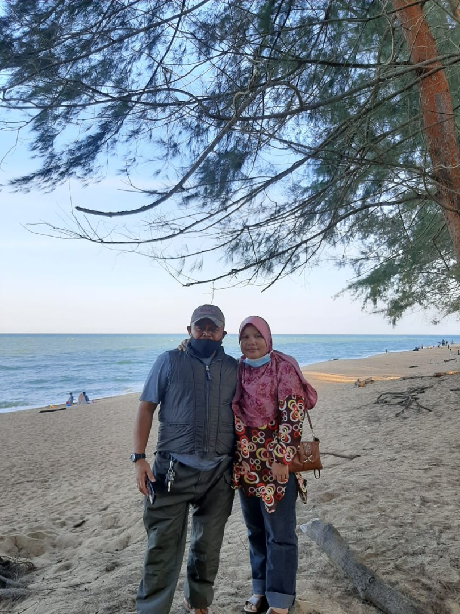
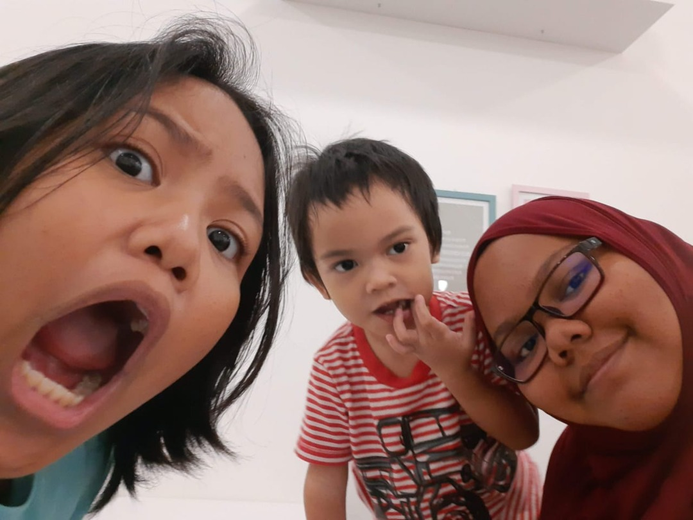
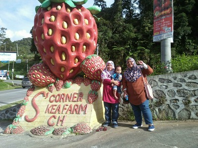
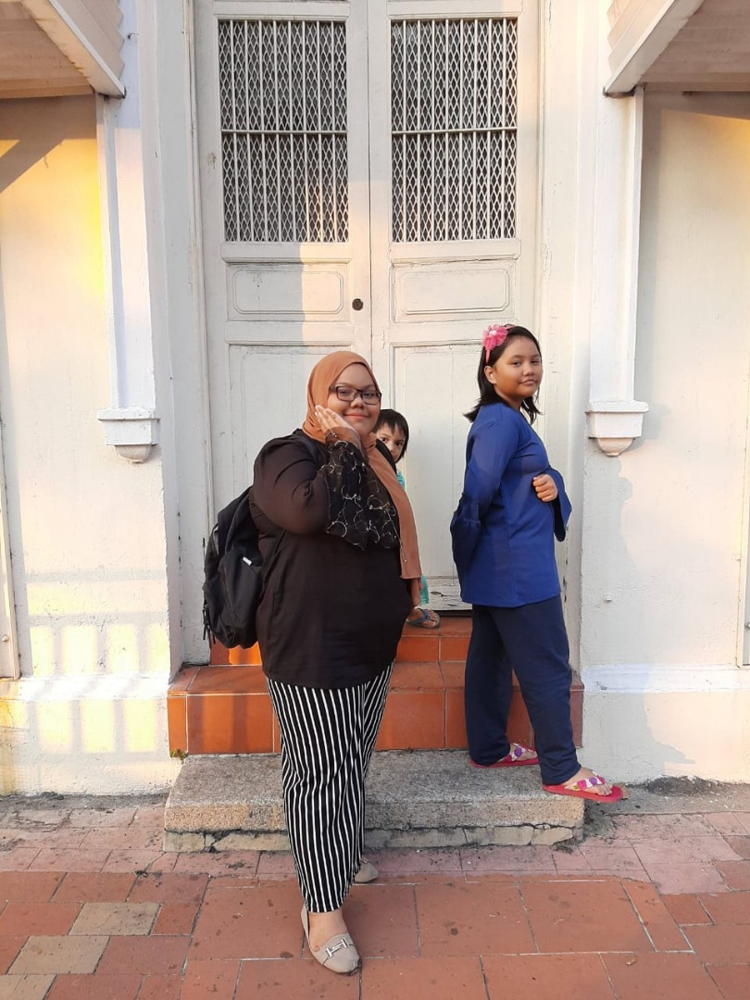

Live simply, Love Abundantly
| Family member | Age | Behaviour |
|---|---|---|
| Kamal Ariffin Bin Jully |
52 years old (19th November 1970) |
- He was born in Perak - His occupation is a teacher in a primary school and he is teaching Bahasa Melayu - He is a caring and loving father and he will always prioritize his wife and children first - He is a chill person and rarely get mad but when someone made his angry he will let out his temper |
| Azizah Binti Ali |
45 years old (22th August 1977) |
- She was born in Penang and she has a very thick “utara” accent - She is also a teacher and she is teaching Dutch language in science boarding school - She is also a caring and loving person and always prioritize others and always give us a surprise - We are close but we do always argue each other and we do have different opinions on certain topic - Although we always argue but when it comes in gossiping we do click with each other |
| Nabihah Najat Binti Kamal Ariffin |
12 years old (29th April 2010) |
- She was born in Hospital Sg Buloh, Selangor - She is a good person but in the same time also a lazy and a potato couch person - We do argue a lot but is normal for us a siblings. As we grew up, the argue matter is getting lesser than before |
| Ahmad Fawwas Rahman Bin Kamal Ariffin |
6 years old (10th February 2016) |
- He was born in Hospital Sg Buloh, Selangor - All of us not expected at all for him to born but nevertheless we still love him - He is a clever boy for his age. He recognize the number from 1-100 and for me its impressive since most of his friend only knows the basic - He is also a lazy person maybe due to all of us pampered him to much |
The TV controller and The birth giver
Siblings day out!
Little brother first experience when on a holiday
Short trip to Penang
